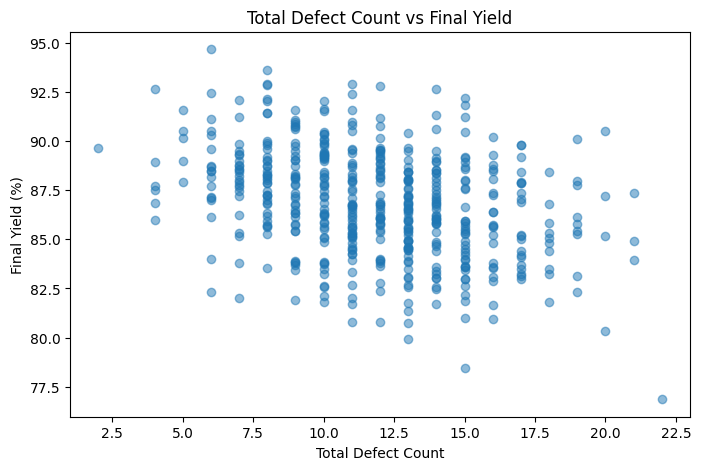
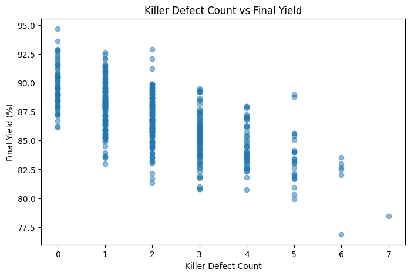
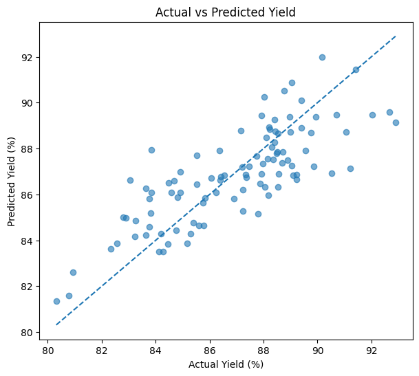
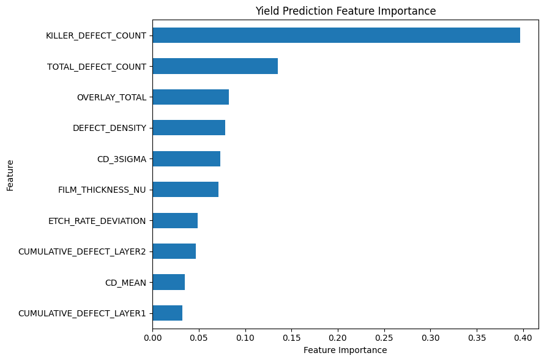

Total Defect Count vs Final Yield

결과 해석 · 공정 관점
총 결함 수와 Final Yield의 관계를 확인했습니다. 검사 데이터는 수율 저하를 조기에 감지하고 후속 원인 분석의 우선순위를 정하는 데 활용할 수 있습니다.
Defect, Metrology 및 공정 이력 데이터를 통합하여 최종 수율과의 관계를 분석하고, 머신러닝 기반 수율 예측 및 주요 영향 변수를 탐색한 프로젝트입니다.
반도체 제조에서는 단순히 최종 Yield만 확인하는 것보다 Inspection과 Metrology에서 측정된 중간 품질 지표를 수율과 연결해 분석하는 것이 중요합니다.
Total Defect Count 및 Killer Defect Count와 Final Yield의 관계를 시각화하여 결함 증가와 수율 변화 패턴을 확인했습니다.
Defect, Metrology, 이전 공정 이력 데이터를 하나의 분석 테이블로 통합하여 단일 측정값이 아닌 여러 공정 정보를 동시에 활용하도록 구성했습니다.
여러 공정 및 검사 변수를 입력 Feature로 사용하고 Final Yield를 Target으로 설정하여 Gradient Boosting Regression 모델을 학습했습니다.
학습 데이터와 테스트 데이터를 분리한 뒤 MAE와 R²를 이용해 실제 수율과 예측 수율의 차이를 평가하도록 구성했습니다.
학습된 모델의 Feature Importance를 이용하여 수율 예측 과정에서 상대적으로 중요하게 사용된 검사 및 공정 변수를 확인했습니다.
전체 Defect Count뿐 아니라 실제 소자 불량과 직접적으로 연결될 가능성이 높은 Killer Defect를 별도로 관리하는 것이 중요합니다.
CD, Overlay, Film Thickness 등의 계측 결과를 최종 수율과 연결하면 단순 Spec 판단을 넘어 실제 Yield 영향도를 분석할 수 있습니다.
Feature Importance와 상관분석을 함께 활용하면 수백 개의 공정 변수 중 우선적으로 확인해야 할 변수의 범위를 줄일 수 있습니다.
실제 분석에서는 Wafer, Lot, Tool, Chamber, Recipe 및 공정 시간 정보를 함께 연결하여 모델 결과를 공정 이력과 비교하는 과정이 필요합니다.
Inspection, Metrology 및 Yield 예측 분석 코드는 GitHub Jupyter Notebook에서 확인할 수 있습니다.
View Notebook on GitHub →Inspection / Metrology와 Yield 분석의 실제 실행 결과입니다.
실제 분석 결과 보기 →아래 그래프는 해당 Python 노트북에서 실제 실행되어 저장된 출력입니다.

결과 해석 · 공정 관점
총 결함 수와 Final Yield의 관계를 확인했습니다. 검사 데이터는 수율 저하를 조기에 감지하고 후속 원인 분석의 우선순위를 정하는 데 활용할 수 있습니다.

결과 해석 · 공정 관점
Killer Defect 수와 Final Yield의 관계를 별도로 표시했습니다. 치명 결함은 단순 총량보다 수율에 더 직접적인 영향을 줄 수 있어 분리 관리가 필요합니다.

결과 해석 · 공정 관점
실제 Yield와 예측 Yield를 비교한 결과입니다. 대각선 주변으로의 분포는 예측값이 실제값과 얼마나 일치하는지 확인하는 기준입니다.

결과 해석 · 공정 관점
수율 예측에 상대적으로 기여한 변수를 확인했습니다. 노트북에 명시된 대로 이 중요도는 인과관계가 아니며, 실제 FAB 적용 전 공정·검사 이력과의 검증이 필요합니다.